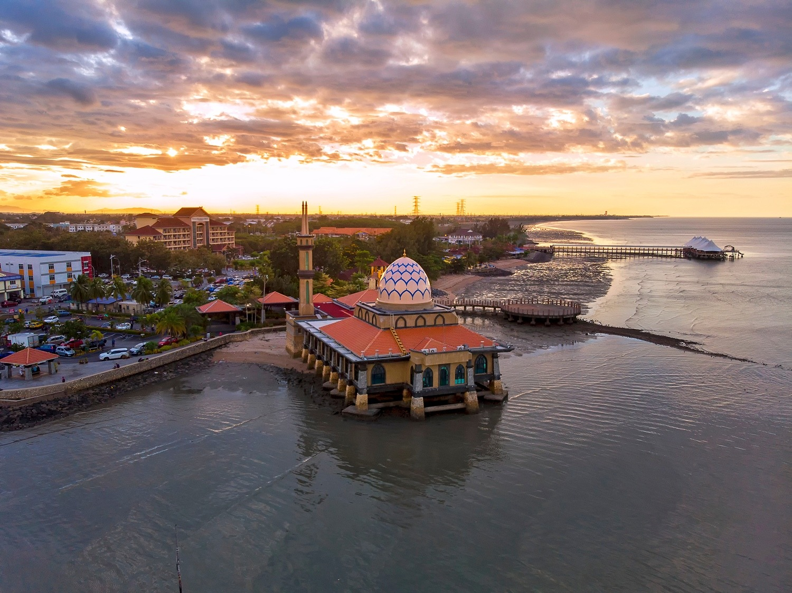
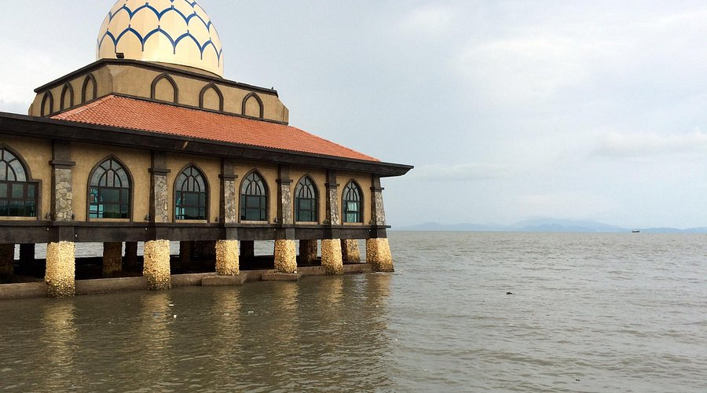
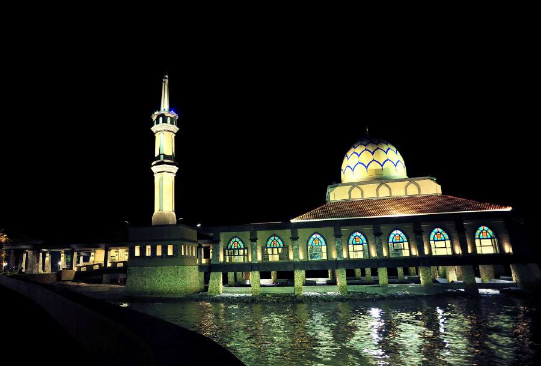

Al Hussain Mosque: The Floating Mosque of Perlis
Al Hussain Mosque, also known as the Floating Mosque, is a stunning landmark located by the Kuala Perlis Jetty. Built on the water, it appears to float during high tide, creating a breathtaking view, especially at sunset. The mosque features modern Islamic architecture with glass walls, intricate carvings, and beautiful lighting, making it a popular spot for worship and photography alike.
The Al Hussain Mosque, fondly known as the Floating Mosque, is one of the most iconic landmarks in Kuala Perlis, Perlis. Built along the waterfront, the mosque appears to float gracefully on the sea, especially during high tide. Its modern Islamic architecture, combined with natural surroundings, makes it not only a place of worship but also a popular attraction for both tourists and locals.
What sets the Al Hussain Mosque apart is its unique design that incorporates materials such as marble, granite, and special stained glass mosaics imported from countries like Iran and Italy. The mosque features a majestic main prayer hall that opens to the sea breeze, offering a calm and peaceful ambiance perfect for reflection and prayers. Its minaret stands tall as a guiding symbol for seafarers and is beautifully illuminated at night.
Aside from its architectural beauty, the mosque is also a center for community and religious activities. It holds regular prayer sessions, religious talks, and gatherings that bring together the local Muslim community. As the sun sets behind the mosque, casting a golden glow over the water, visitors are left with a sense of tranquility and awe, making Al Hussain Mosque a must-visit spiritual and scenic destination in Perlis.
